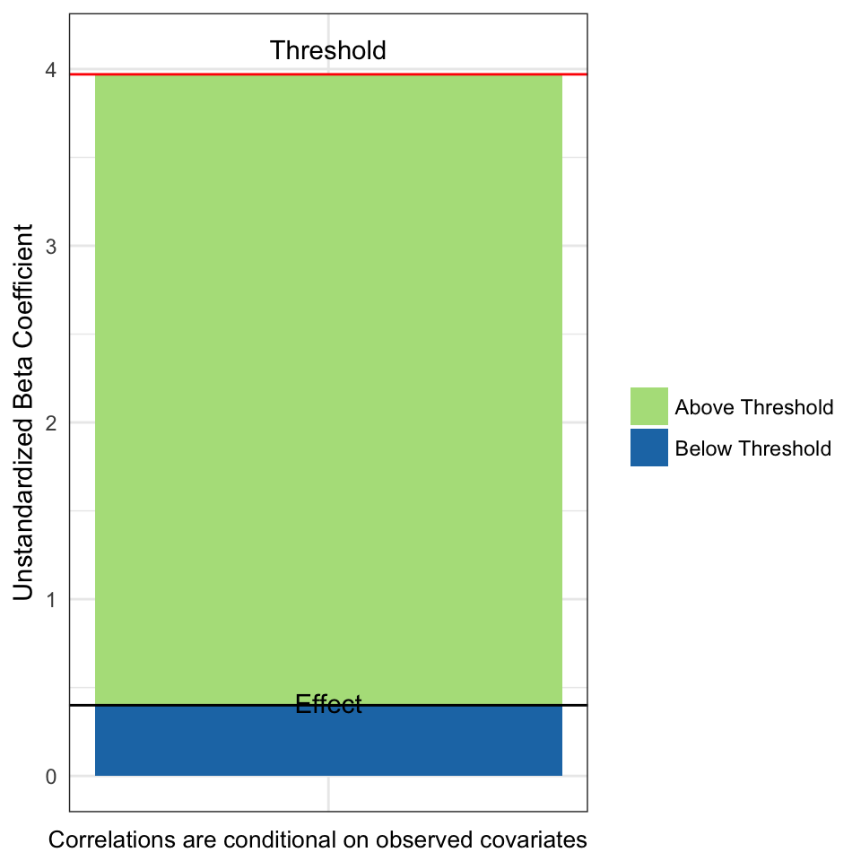
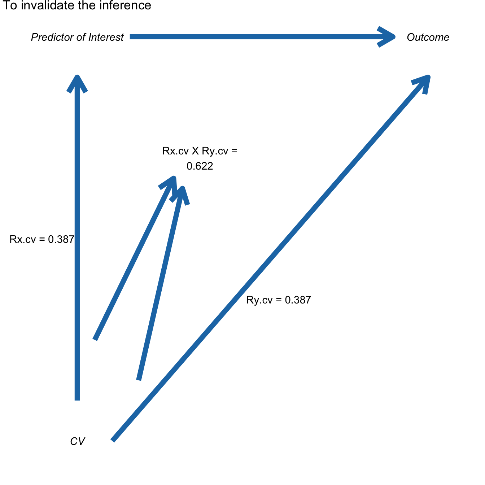
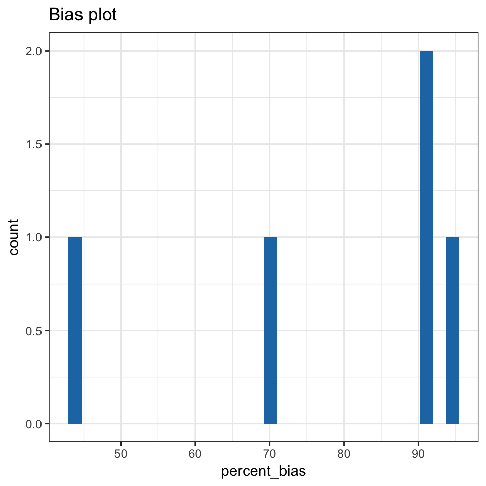
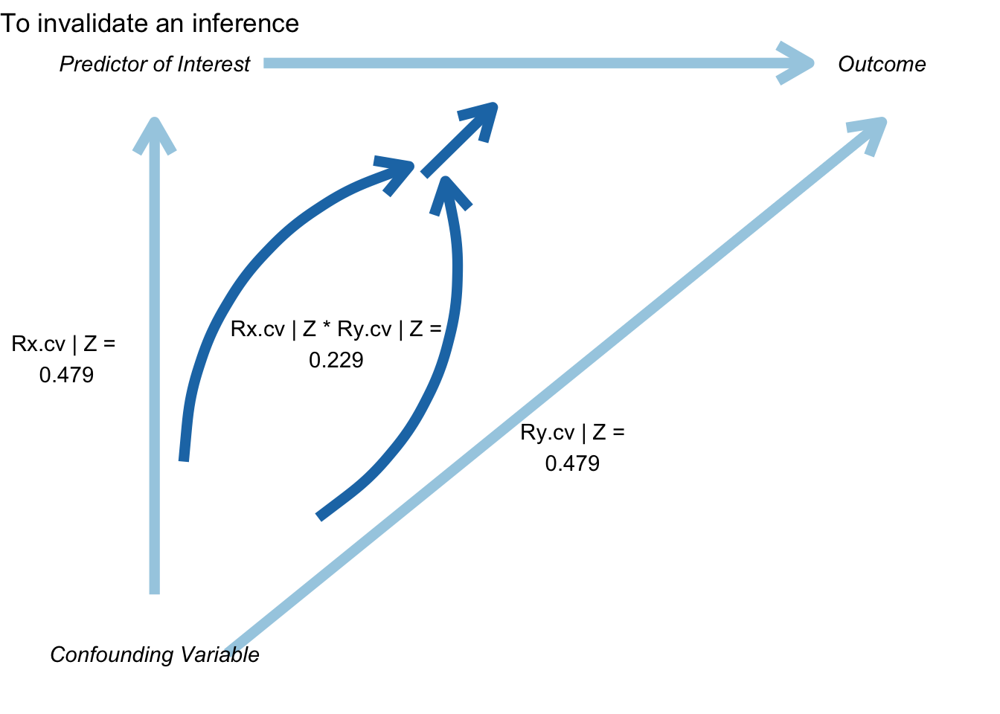

Introduction to konfound
Joshua Rosenberg, Ran Xu, and Ken Frank
2017-12-18
Abstract
This abstract is adapted from Xu, Frank, and Maroulis’ STATA tutorial “What would it take to Change your Inference? Quantifying the Discourse about Causal Inferences in the Social Sciences.”
Statistical methods that quantify the discourse about causal inferences in terms of possible sources of biases, or “sensitivity analysis,” are becoming more important to a variety of social science fields, including research in education, public policy, and political science. A series of recent works by Frank and colleagues on sensitivity analysis points to limitations in earlier methods and aims to extend beyond them. We implement these developments, which previously have been implemented in Stata, in R through the konfound package. In particular, we provide functions for quantifying the bias necessary to alter an inference, from the framework of Rubin’s (1974) causal model, as well as the robustness of causal inference in terms of the impact threshold of a confounding variable.
Examples
konfound is an R package to easily carry out sensitivity analysis as described in Frank, Maroulis, Duong, and Kelcey (2013) based on Rubin’s (1974) causal model.
Installation
You can install konfound from GitHub (it will be available on CRAN and therefore via install.packages("konfound") soon) with:
install.packages("devtools")
devtools::install_github("jrosen48/konfound")Loading konfound
library(konfound)#> Loading konfound
#> Sensitivity analysis as described in Frank, Maroulis, Duong, and Kelcey (2013) and in Frank (2000).
#> For more information visit https://jmichaelrosenberg.shinyapps.io/shinykonfound/.Use of pkonfound()
pkonfound() is used when we have values from an already-conducted analysis, such as one in an already-published study or from an analysis carried out using other software.
For example, in the use below, we simply enter the values for the unstandardardized beta coefficient (2), its standard error (.4), the sample size (100), and the number of covariates (3)
pkonfound(.4, 2, 100, 3)
#> Replacement of Cases Approach:
#> To sustain the inference, 89.924% of the estimate would have to be due to bias based on a threshold of 3.97 and statistical significance.
#> To sustain the inference, 90 of the cases with 0 effect would have to be replaced with cases at the threshold of inference.
#>
#> Correlation-based Approach:
#> An omitted variable would have to be correlated at 0.387 with the outcome and at 0.387 with the predictor of interest (conditioning on observed covariates) to sustain an inference based on a threshold of 3.97 and statistical significance.
#> Correspondingly the impact of an omitted variable (as defined in Frank 2000) must be 0.387 X 0.387 = 0.15 to sustain an inference.
#> NULLHere is another example, but one in which the unstandardized beta coefficient is smaller than its standard error:
pkonfound(.4, 2, 100, 3)
#> Replacement of Cases Approach:
#> To sustain the inference, 89.924% of the estimate would have to be due to bias based on a threshold of 3.97 and statistical significance.
#> To sustain the inference, 90 of the cases with 0 effect would have to be replaced with cases at the threshold of inference.
#>
#> Correlation-based Approach:
#> An omitted variable would have to be correlated at 0.387 with the outcome and at 0.387 with the predictor of interest (conditioning on observed covariates) to sustain an inference based on a threshold of 3.97 and statistical significance.
#> Correspondingly the impact of an omitted variable (as defined in Frank 2000) must be 0.387 X 0.387 = 0.15 to sustain an inference.
#> NULLWe can also choose from a number of forms of output to return, such as a plot of the output from the correlation-based approach:
pkonfound(2, .4, 100, 3, to_return = "corr_plot")
And the threshold plot associated with the replacement of cases approach:
pkonfound(.4, 2, 100, 3, to_return = "thresh_plot")
Finally, you can return the raw output, for use in other analyses.
pkonfound(.4, 2, 100, 3, to_return = "raw_output")
#> # A tibble: 1 x 8
#> action inference percent_bias_to_change_inference
#> <chr> <chr> <dbl>
#> 1 to_sustain fail_to_reject_null 89.924
#> # ... with 5 more variables: replace_null_cases <dbl>, unstd_beta <dbl>,
#> # beta_threshhold <dbl>, omitted_variable_corr <dbl>, itcv <dbl>You can also specify multiple forms of output at once.
model_output <- pkonfound(2, .4, 200, 3, to_return = c("raw_output", "thresh_plot", "corr_plot"))
#> Replacement of Cases Approach:
#> To invalidate the inference, 60.557% of the estimate would have to be due to bias based on a threshold of 0.789 and statistical significance.
#> To invalidate the inference, 121 observations would have to be replaced with cases for which the effect is 0.
#>
#> Correlation-based Approach:
#> An omitted variable would have to be correlated at 0.479 with the outcome and at 0.479 with the predictor of interest (conditioning on observed covariates) to invalidate an inference based on a threshold of 0.14 and statistical significance.
#> Correspondingly the impact of an omitted variable (as defined in Frank 2000) must be 0.479 X 0.479 = 0.229 to invalidate an inference.
#> Print output created by default. Created 3 other forms of output. Use list indexing or run summary() on the output to see how to access.
summary(model_output)
#> Created 3 forms of output. To access type:
#>
#> model_output$raw_output
#> model_output$thresh_plot
#> model_output$corr_plotWhen we type the name of the object, we see that we created three types of output that we can access as follows:
model_output$raw_output
#> # A tibble: 1 x 8
#> action inference percent_bias_to_change_inference
#> <chr> <chr> <dbl>
#> 1 to_invalidate reject_null 60.557
#> # ... with 5 more variables: replace_null_cases <dbl>, unstd_beta <dbl>,
#> # beta_threshhold <dbl>, omitted_variable_corr <dbl>, itcv <dbl>
model_output$thresh_plot
model_output$corr_plot
Use of konfound()
For linear models fit with lm()
m1 <- lm(mpg ~ wt + hp + qsec, data = mtcars)
m1
#>
#> Call:
#> lm(formula = mpg ~ wt + hp + qsec, data = mtcars)
#>
#> Coefficients:
#> (Intercept) wt hp qsec
#> 27.61053 -4.35880 -0.01782 0.51083
konfound(m1, hp)
#> Note that this output is calculated based on the correlation-based approach used in mkonfound()
#> Replacement of Cases Approach:
#> To sustain the inference, 41.327% of the estimate would have to be due to bias based on a threshold of -0.031 and statistical significance.
#> To sustain the inference, 13 of the cases with 0 effect would have to be replaced with cases at the threshold of inference.
#>
#> Correlation-based Approach:
#> An omitted variable would have to be correlated at 0.322 with the outcome and at 0.322 with the predictor of interest (conditioning on observed covariates) to sustain an inference based on a threshold of -0.031 and statistical significance.
#> Correspondingly the impact of an omitted variable (as defined in Frank 2000) must be 0.322 X 0.322 = 0.104 to sustain an inference.
#> NULLWe can also output multiple forms of output at once:
konfound_output <- konfound(m1, hp, to_return = c("raw_output", "thresh_plot", "corr_plot"))
#> Note that this output is calculated based on the correlation-based approach used in mkonfound()
#> Replacement of Cases Approach:
#> To sustain the inference, 41.327% of the estimate would have to be due to bias based on a threshold of -0.031 and statistical significance.
#> To sustain the inference, 13 of the cases with 0 effect would have to be replaced with cases at the threshold of inference.
#>
#> Correlation-based Approach:
#> An omitted variable would have to be correlated at 0.322 with the outcome and at 0.322 with the predictor of interest (conditioning on observed covariates) to sustain an inference based on a threshold of -0.031 and statistical significance.
#> Correspondingly the impact of an omitted variable (as defined in Frank 2000) must be 0.322 X 0.322 = 0.104 to sustain an inference.
#> Print output created by default. Created 3 other forms of output. Use list indexing or run summary() on the output to see how to access.
summary(konfound_output)
#> Created 3 forms of output. To access type:
#>
#> konfound_output$raw_output
#> konfound_output$thresh_plot
#> konfound_output$corr_plotWe can then type each of those, i.e.:
konfound_output$raw_output
#> # A tibble: 1 x 8
#> action inference percent_bias_to_change_inference
#> <chr> <chr> <dbl>
#> 1 to_sustain fail_to_reject_null 41.327
#> # ... with 5 more variables: replace_null_cases <dbl>, unstd_beta <dbl>,
#> # beta_threshhold <dbl>, omitted_variable_corr <dbl>, itcv <dbl>We can also test all of the variables as predictors of interest:
konfound(m1, wt, test_all = TRUE)
#> var_name t df action inference
#> 1 wt -5.788845 29 to_invalidate reject_null
#> 2 hp -1.200000 29 to_sustain fail_to_reject_null
#> 3 qsec 1.164009 29 to_sustain fail_to_reject_null
#> pct_bias_to_change_inference itcv r_con
#> 1 51.508 0.585 0.765
#> 2 38.740 -0.102 0.319
#> 3 40.494 -0.106 0.326You can also return a table with some key output from the correlation-based approach.
konfound(m1, wt, to_return = "table")
#> Note that this output is calculated based on the correlation-based approach used in mkonfound()
#> Dependent variable is mpg
#> term estimate std.error statistic p.value itcv impact
#> 1 (Intercept) 27.611 8.420 3.279 0.003 NA NA
#> 2 wt -4.359 0.753 -5.791 0.000 0.243 NA
#> 3 hp -0.018 0.015 -1.190 0.244 NA 0.511
#> 4 qsec 0.511 0.439 1.163 0.255 NA 0.073If the impact threshhold is greater than the impacts of the Zs (the other covariates) then an omitted variable would have to have a greater impact than any of the observed covariates to change the inference.
Note that in fields in which there is a lot known about covariates given the outcome of interest, then the omitted ones are likely less important than those that are known an included (i.e., for educational achievement, we have a good sense of the factors that matter).
For generalized linear models fit with glm()
Effects for these models are interpreted on the basis of average partial (or marginal) effects (calculated using the margins package).
# if forcats is not installed, this install it first using install.packages("forcats") for this to run
if (requireNamespace("forcats")) {
d <- forcats::gss_cat
d$married <- ifelse(d$marital == "Married", 1, 0)
m2 <- glm(married ~ age, data = d, family = binomial(link = "logit"))
konfound(m2, age)
}
#> Replacement of Cases Approach:
#> To sustain the inference, 80.978% of the estimate would have to be due to bias based on a threshold of 0.013 and statistical significance.
#> To sustain the inference, 17334 of the cases with 0 effect would have to be replaced with cases at the threshold of inference.
#>
#> Correlation-based Approach:
#> An omitted variable would have to be correlated at 5.535 with the outcome and at 5.535 with the predictor of interest (conditioning on observed covariates) to invalidate an inference based on a threshold of 1.003 and statistical significance.
#> Correspondingly the impact of an omitted variable (as defined in Frank 2000) must be 5.535 X 5.535 = 30.636 to invalidate an inference.
#> NULLAs with models fit with lm(), multiple forms of output can be specified with the to_return argument to konfound(), i.e. konfound(m2, age, to_return = c("raw_output", "corr_plot", "thresh_plot")).
Use of mkonfound()
Here, d represents output from a number (30 in this case) of past studies, read in a CSV file from a website:
d <- read.csv("https://msu.edu/~kenfrank/example%20dataset%20for%20mkonfound.csv")
mkonfound(d, t, df)
#> # A tibble: 30 x 7
#> t df action inference
#> <dbl> <int> <chr> <chr>
#> 1 7.076763 178 to_invalidate reject_null
#> 2 4.127893 193 to_invalidate reject_null
#> 3 1.893137 47 to_sustain fail_to_reject_null
#> 4 -4.166395 138 to_invalidate reject_null
#> 5 -1.187599 97 to_sustain fail_to_reject_null
#> 6 3.585478 87 to_invalidate reject_null
#> 7 0.281938 117 to_sustain fail_to_reject_null
#> 8 2.549647 75 to_invalidate reject_null
#> 9 -4.436048 137 to_invalidate reject_null
#> 10 -2.045373 195 to_invalidate reject_null
#> # ... with 20 more rows, and 3 more variables:
#> # pct_bias_to_change_inference <dbl>, itcv <dbl>, r_con <dbl>
mkonfound(d, t, df, return_plot = T)
#> `stat_bin()` using `bins = 30`. Pick better value with `binwidth`.
References
Frank, K.A., Maroulis, S., Duong, M., and Kelcey, B. 2013. What would it take to change an inference?: Using Rubin’s causal model to interpret the robustness of causal inferences. Education, Evaluation and Policy Analysis. Vol 35: 437-460. https://msu.edu/~kenfrank/What%20would%20it%20take%20to%20Change%20an%20Inference%20published.docx
Frank, K.A., Gary Sykes, Dorothea Anagnostopoulos, Marisa Cannata, Linda Chard, Ann Krause, Raven McCrory. 2008. Extended influence: National Board Certified Teachers as help providers. Education, Evaluation, and Policy Analysis. Vol 30(1): 3-30. https://msu.edu/~kenfrank/papers/Does%20NBPTS%20Certification%20Affect%20the%20Number%20of%20Colleagues%20a%20Teacher%20Helps%20with%20Instructional%20Matters%20acceptance%20version%202.doc
Frank, K. A. and Min, K. 2007. Indices of Robustness for Sample Representation. Sociological Methodology. Vol 37, 349-392. https://msu.edu/~kenfrank/papers/INDICES%20OF%20ROBUSTNESS%20TO%20CONCERNS%20REGARDING%20THE%20REPRESENTATIVENESS%20OF%20A%20SAMPLE.doc (co first authors)
Frank, K. 2000. “Impact of a Confounding Variable on the Inference of a Regression Coefficient.” Sociological Methods and Research, 29(2), 147-194 https://msu.edu/~kenfrank/papers/impact%20of%20a%20confounding%20variable.pdf